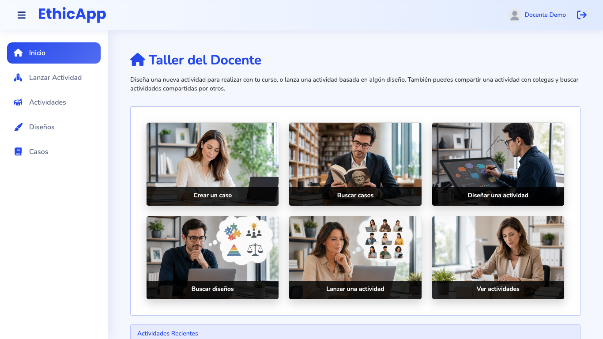
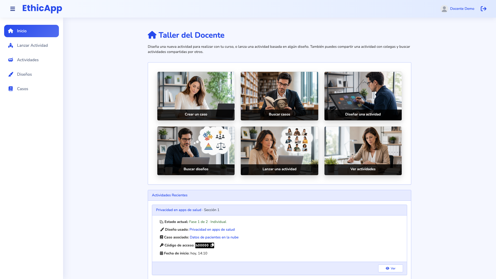
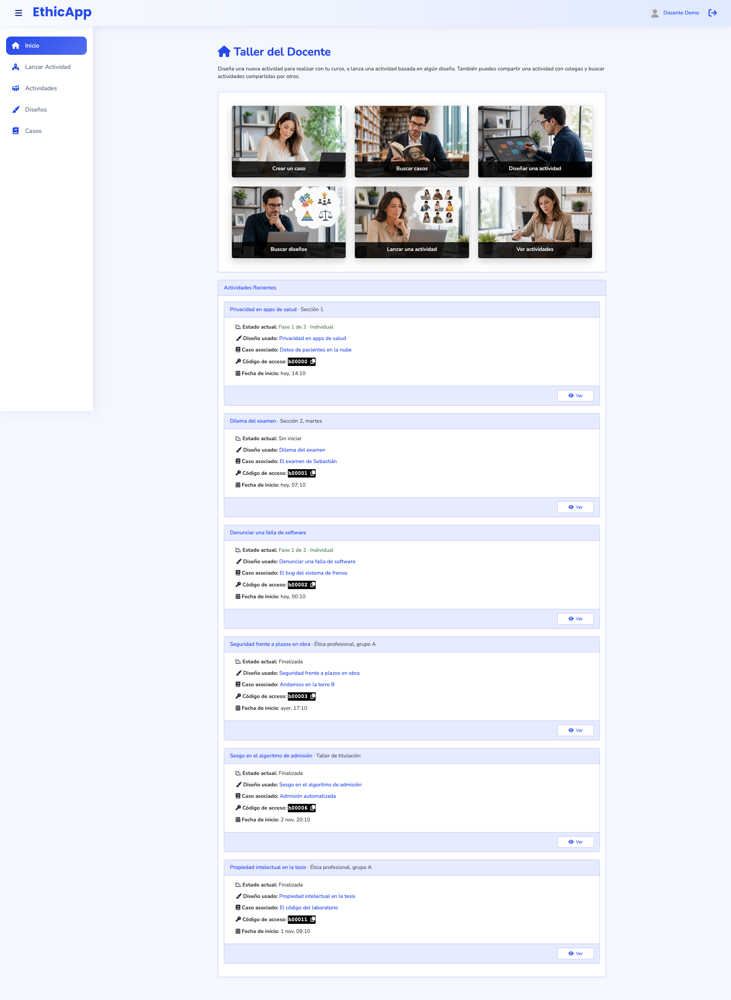

Low fidelity. The proposal replaces the home's "Actividades Recientes" panel, under the photo launcher, with two short tables in the design language of Actividades (epic #1046): the newest activities in progress, then the newest finished ones, with the same columns, status, actions and row menu as the Actividades tabs. Each frame is drawn at its real viewport size and scaled down; the dashed line is the fold, and frames taller than the viewport show the page below it. Labels are in Spanish, as a teacher sees them in es-CL. Titles, cases and people are fictional.
fold (bottom of the viewport)numbered notes, explained under each frame
Where the home's list sits
The home is the first page after sign-in. The launcher takes the teacher anywhere; the list under it answers "what is going on with my activities right now" and leads to Actividades (docs/design/activities-index, implemented) for everything else.
Home list (this proposal)
Actividades
Job
Resume work: open a running activity's dashboard, hand out a code, reach the reports of one that just ended.
Find any activity, filter and search, archive and restore.
Rows
The 5 newest activities in progress or not started; the 3 newest finished ones. Archived activities are left out.
Every activity, 20 per page, in three tabs.
What a row says
The same as the Actividades row of the same tab: status, participants, code and launch, or status, participants and end.
Status, participants, code and launch (En curso); status, participants and end (Terminadas).
Bridge
"Ver las 53 en curso", "Sin iniciar · 9" and "Ver las 18 terminadas" open Actividades on that tab and filter.
"Inicio" in the side menu.
Open questions (see the README):
Does the launcher stay as it is (frames A, B), or does it become one row of smaller tiles so the list starts on the first screen at 1366 × 768 (frame C)?
Does the home keep a list of finished activities, or only the activities in progress?
How many rows: 5 in progress and 3 finished, or the 3 and 3 of today?
Today

1366 × 768, first screen: the title, the intro and the six photo tiles. Only the heading "Actividades Recientes" reaches the bottom edge.

1920 × 1080, first screen: one card, the newest activity in progress, in the 1050 px column.

Whole page: six 273 px cards, three in progress then three finished, with no heading between them. Each one's only button is "Ver".
A. 1920 × 1080: activities in progress and recently finished
The head and the launcher stay as they are (but see frame C).
"Actividades en curso", with its counts: "53 · Sin iniciar 9". Each count is a link to Actividades: #!/activities and #!/activities?status=not-started. The order is stated: "Más recientes primero".
The En curso table of Actividades, with its five newest rows: the activity's name and description over its case, "○ Sin iniciar" or "● Fase n de m · Grupal" with the "IA" mark, participants, the code with its copy button and the launch date in the teacher's time zone.
The same actions: "▶ Abrir panel" and the "⋯" menu (open on the second row): Copiar código, Reportes, Ver diseño, Ver caso. Copying the code, from the menu or the copy button, shows the notice of Actividades, "Código copiado".
"Ver las 53 en curso →" opens Actividades on its first tab.
"Terminadas recientemente": the three newest finished activities, in the Terminadas table, with "📊 Reportes" as the visible action. Their code is gone, as in Terminadas. "Ver las 18 terminadas →" opens #!/activities?tab=finished.
B. 1366 × 768: the same page, with today's launcher
The list starts below the first screen, as today: the launcher's six 190 px tiles fill it. The eight rows end about 1100 px higher than today's six cards.
C. 1366 × 768: option, a one-row launcher
The six tiles in one row, 96 px tall, with the same photos cropped and the same captions. They keep their order and targets.
The list starts on the first screen: the heading and the first rows of "Actividades en curso" are visible without scrolling.
D. 1024 × 768: one column
Below 1200 px the app's menu folds and each table becomes the compact rows of Actividades: name, description and case, with the date on the right; then status, participants, code and the actions.
E. 1366 × 768: a teacher with no activities yet
The empty page of Actividades, in place of both tables: what an activity is, then "1. Prepara un diseño" and "2. Lanza la actividad". The first step is left out when the teacher already has a design ready to launch. Today's panel shows one sentence and three buttons in a row.